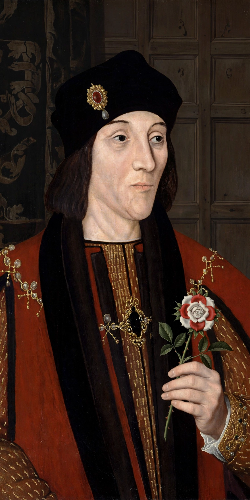

| Henry VII | |
|---|---|
| Reign | 22 August 1485 – 21 April 1509 |
| Born | 28 January 1457, Pembroke Castle, Wales |
| Died | 21 April 1509, Richmond Palace |
| House | Tudor |
| Spouse | Elizabeth of York |
| Mother | Lady Margaret Beaufort |
Henry VII (28 January 1457 – 21 April 1509) was King of England from 1485 until his death, the first monarch of the House of Tudor. He won the crown by defeating Richard III at the Battle of Bosworth Field, conventionally ending the Wars of the Roses, and spent his reign securing a dynasty whose claim had been, at his accession, extremely tenuous.

Henry's claim descended through his mother, Lady Margaret Beaufort, from John of Gaunt. After the Yorkist triumph of 1471 he spent fourteen years in exile in Brittany and France. Landing at Milford Haven in August 1485 with French backing, he defeated and killed Richard III at Bosworth — the last English king to die in battle — and was crowned on the field, by tradition.
He married Elizabeth of York, daughter of Edward IV, uniting the rival houses (the Tudor rose combined their badges). He survived the pretenders Lambert Simnel (defeated at Stoke, 1487) and Perkin Warbeck, and bound the nobility with bonds, recognisances and the Council Learned in the Law. Abroad he made peace and advantageous marriages: his daughter Margaret wed James IV of Scotland, and his son Arthur — then, after Arthur's death, Henry — was matched to Catherine of Aragon.
Henry restored the crown's finances through meticulous, personally audited administration, leaving a solvent monarchy and a substantial treasure. Later tradition painted him as a miserly, suspicious "winter king"; modern historians stress his achievement in stabilising England after thirty years of civil war. He died in 1509 and was succeeded peacefully by his son Henry VIII — the first uncontested English succession in generations.
Edward IV · Battle of Bosworth Field · House of Tudor · Princes in the Tower